进程的地址空间：mmap、munmap 与 mprotect
课程：2026 春季学期《操作系统原理》，第 6 讲
讲师：蒋炎岩（jyy）
官方课程主页：https://jyywiki.cn/OS/2026/
官方讲义：https://jyywiki.cn/OS/2026/lect6.md
视频来源：Bilibili BV18nAjz9EcW
版权说明：课程讲义与幻灯片归蒋炎岩所有，采用 Creative Commons BY-NC 4.0 许可；本电子书是对课堂讲授的书面化重构，保留出处与许可说明。
导语：进程的内存里到底有什么？
上一讲通过 fork、execve 和 exit 建立了进程生命周期。CrazyOS 中每个 struct proc 都拥有一块固定大小的 mem：
#define MEM_SIZE (1 << 20)
#define MEM_OFFSET 0x80000000u
#define STACK_TOP (MEM_OFFSET + MEM_SIZE)
struct proc {
struct CPUState cpu;
uint8_t mem[MEM_SIZE];
/* pid, buffer, length, ... */
};
这说明进程不仅有寄存器和 PC，也有自己的内存。真实进程的地址空间比 CrazyOS 复杂得多：
- 程序代码；
- 只读数据；
- 已初始化数据；
- 未初始化数据；
- 堆；
- 栈；
- 动态链接库；
- 内核提供的
vvar/vdso； - 匿名映射；
- 文件映射；
- 共享内存。
本讲的关键问题是：
进程地址空间中的每一个字节，究竟由谁规定、从哪里来、为什么放在那里？
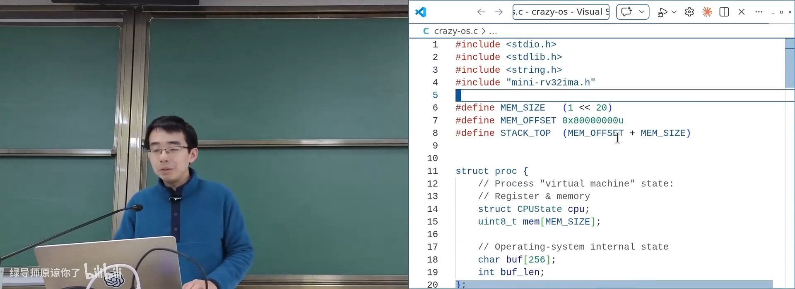
📷 CrazyOS 中每个进程有一份独立的 memory
回到原视频 (00:01:47)
1. 地址空间与指针
1.1 教科书定义
操作系统为每个进程提供独立的虚拟地址范围，称为 进程地址空间（Address Space）。
核心作用包括：
- 隔离：不同进程互不干扰；
- 保护：无权限访问产生异常；
- 抽象：程序以为拥有一大片连续内存；
- 扩展：内存可按需分配；
- 有限共享：在隔离基础上支持共享内存。
但只记定义并不能回答：
- 代码、数据和栈分别在哪？
- 为什么有些地址可读、有些可写、有些可执行？
- 为什么每次运行地址可能变化？
- 程序未访问的内存为什么可以先“分配”？
这些问题的答案需要从地址、ELF、加载器和 ABI 一层层构建。
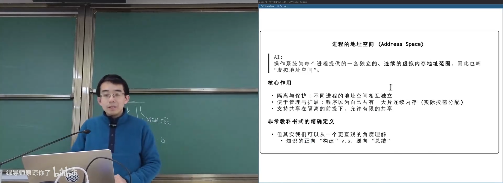
📷 进程地址空间的隔离与虚拟化
回到原视频 (00:04:02)
1.2 地址空间就是可由指针访问的字节序列
CPU 的 load / store 指令需要一个地址和位宽：
unsigned char *ptr = ...;
unsigned char value = *ptr; /* load */
*ptr = 1; /* store */
指针本质上保存地址。地址空间就是进程通过 load、store 和取指能够访问的字节范围。
flowchart LR
P["指针 / 地址"] --> M["地址空间"]
M --> L["load: 读取字节"]
M --> S["store: 写入字节"]
M --> F["fetch: 读取指令"]
1.3 为什么需要 volatile
volatile char *ptr = input();
*ptr;
如果读取结果没有被使用，普通指针访问可能被编译器当作死代码删除。
volatile 告诉编译器：
对该地址的访问具有可观察效果，不允许优化掉。
它与“指向的内存不可修改”的 const 不同：
const char *：不能通过该指针修改内存；volatile char *：每次访问都必须真实执行；volatile char * volatile：指针本身也不能被优化缓存。
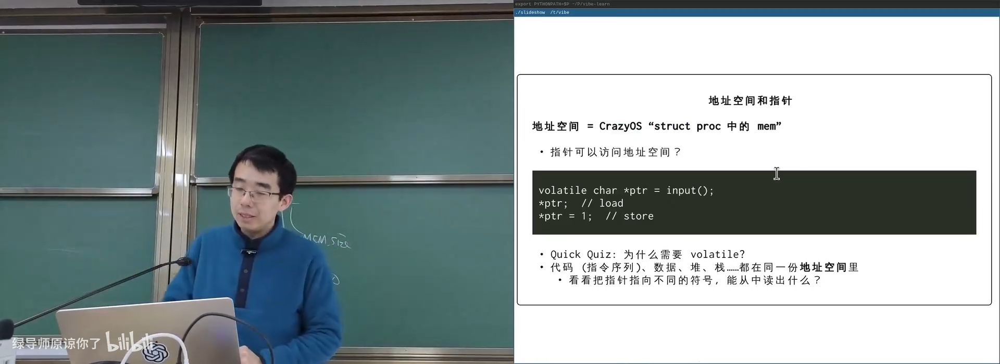
📷 用指针观察代码、数据与栈的不同地址
回到原视频 (00:06:01)
课堂使用指针分别指向函数、全局变量和局部变量，打印地址，并读取 main 函数开头的机器码，再与二进制文件交叉验证。
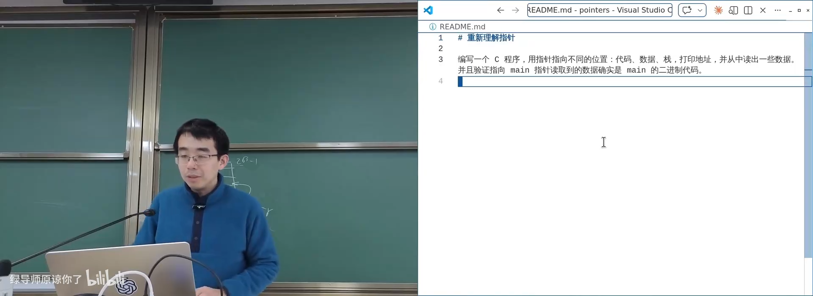
📷 指针读取 main 函数机器码并与 ELF 对照
回到原视频 (00:10:05)
2. 地址空间中的字节从哪里来
2.1 字节本身不带类型
一个字节本身没有“整数”“指针”或“指令”标签。它被如何解释取决于 CPU 当前如何使用它：
- PC 指向它：作为指令取指、译码；
load读取它：按指定位宽解释为数据；store写入它：替换对应字节。
所以必须先回答“字节是什么”，再回答“字节放在哪里”和“初始值是什么”。
2.2 ELF 与 PT_LOAD
链接器将代码和数据组织为 ELF 节区：
.text：机器指令；.rodata：只读数据；.data：有初始值的可写数据；.bss：零初始化的数据，不占文件中的实际内容；- 其他链接与动态加载元数据。
加载器只关心 ELF 中的 PT_LOAD 段。每段包含：
文件偏移
虚拟地址
大小
对齐
访问权限
flowchart LR
S["源文件"] --> C["编译与汇编"]
C --> O["目标文件<br/>.text / .data / .bss"]
O --> L["链接器"]
L --> E["ELF"]
E --> H["Program Headers<br/>PT_LOAD"]
H --> A["进程地址空间"]
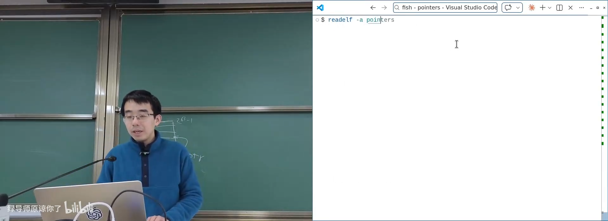
📷 ELF 的 PT_LOAD 段决定哪些内容被加载
回到原视频 (00:16:40)
2.3 ABI、加载器与初始栈
操作系统加载器与 System V ABI 共同规定进程初始状态：
- 加载
PT_LOAD段； - 清零
bss； - 设置初始 PC 和 SP；
- 在栈上放置
argc、argv、envp、auxv字符串与指针； - 设置必要寄存器。
flowchart TD
E["execve"] --> L["OS 加载器"]
L --> P["加载 PT_LOAD"]
L --> B["清零 bss"]
L --> S["建立初始栈"]
S --> A["argc / argv / envp / auxv"]
L --> R["设置 PC / SP / 寄存器"]
R --> U["进入程序入口"]
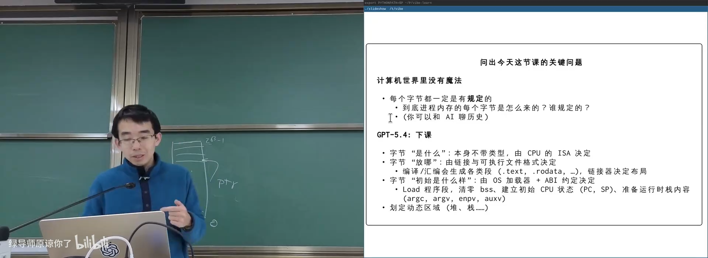
📷 ABI 规定进程初始栈和寄存器状态
回到原视频 (00:18:21)
2.4 ASLR
同一个程序多次运行时，函数和变量的绝对地址可能不同。这是因为 Linux 启用了：
Address Space Layout Randomization（ASLR）
系统会随机化代码、栈、堆和动态库的加载位置，使攻击者更难预测地址。GDB 默认可能关闭或固定部分随机化，因此调试时地址更稳定。
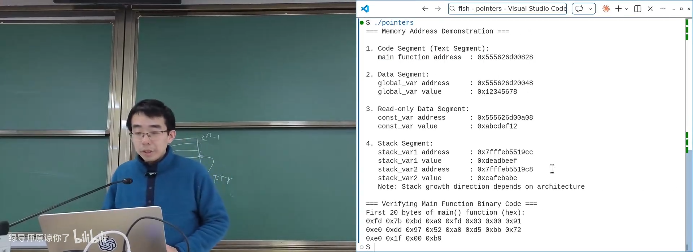
📷 ASLR 使程序每次运行时地址布局变化
回到原视频 (00:15:33)
3. 探索真实进程地址空间
3.1 /proc/<pid>/maps
Linux 通过 procfs 提供进程地址空间映射：
cat /proc/<pid>/maps
每一行通常包含：
起始地址-结束地址 权限 偏移 设备 inode 路径
权限由三个字符组成：
r：可读；w：可写；x：可执行。
典型区域包括：
- 可执行文件映射；
- 共享库；
- 匿名堆区域；
- 线程栈；
vvar；vdso；vsyscall。
flowchart LR
P["进程 PID"] --> F["/proc/PID/maps"]
F --> R["地址区间与权限"]
F --> M["文件映射"]
F --> A["匿名内存"]
F --> V["vvar / vdso"]
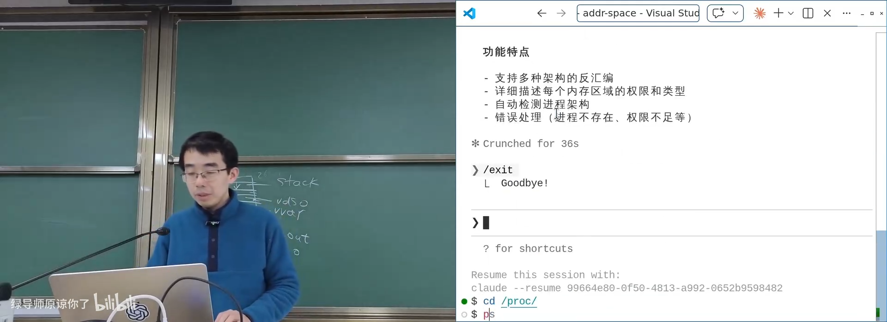
📷 解析 procfs maps 得到真实地址空间布局
回到原视频 (00:27:44)
3.2 最小程序也不只有代码与栈
即使是一个直接用 ld 链接的最小程序，地址空间中仍可能出现：
- 一段可读可执行的程序映射；
vvar；vdso；- 初始栈。
vvar 与 vdso 是 Linux 提供的优化机制：
vvar：内核与用户态共享的只读数据；vdso：可直接在用户态执行的少量代码。
对于 gettimeofday() 等高频调用，程序可以利用 CPU 时间计数器和共享数据，在不进入内核的情况下得到时间。
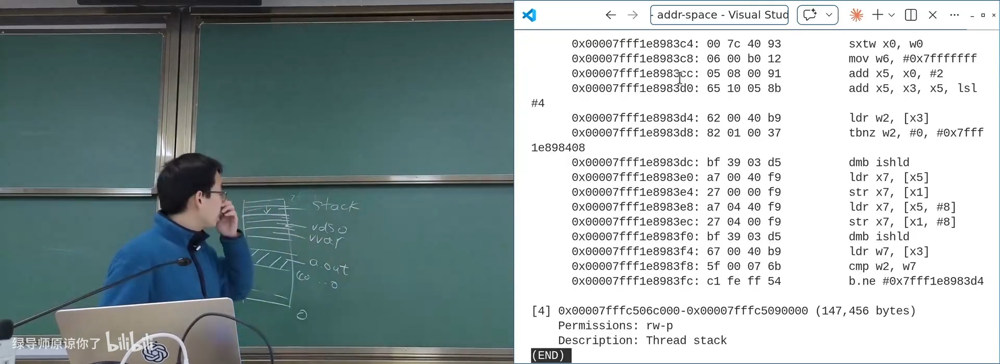
📷 vvar 与 vdso 让部分系统调用绕过内核
回到原视频 (00:24:30)
3.3 Address Space Explorer
课堂让 AI 编写一个命令行工具：
接收 PID，解析
/proc/<pid>/maps，展示地址空间，并对可执行区域反汇编前 1 KB。
核心实现只需要：
- 读取
/proc/<pid>/maps； - 解析每段地址、权限和路径；
- 对可执行区间读取内存；
- 使用 Capstone 等反汇编库解码指令。
flowchart TD
PID["输入 PID"] --> MAPS["读取 /proc/PID/maps"]
MAPS --> PARSE["解析区间与权限"]
PARSE --> EXEC{"区域可执行?"}
EXEC -->|"是"| READ["读取前 1KB"]
READ --> DIS["反汇编"]
EXEC -->|"否"| SKIP["显示映射信息"]
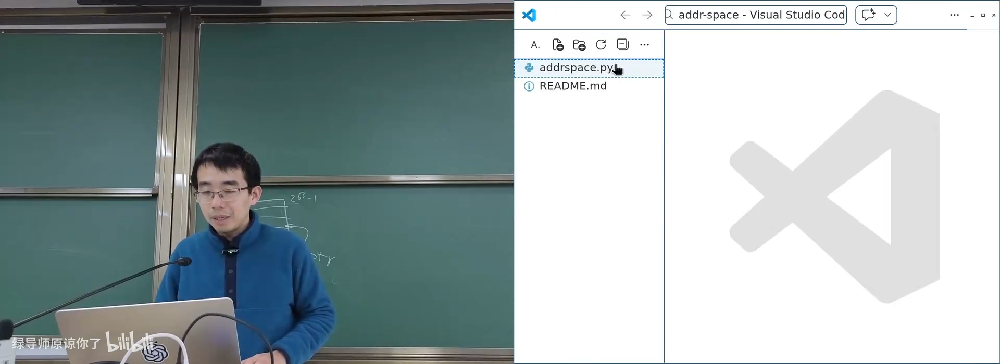
📷 程序化展示另一个进程的地址空间
回到原视频 (00:20:00)
4. MMU：操作系统给进程戴上的 VR 眼镜
4.1 虚拟地址到物理页
地址空间中的“连续地址”并不对应连续的物理页。CPU 每次取指、load 和 store 都经过 MMU：
- 查页表；
- 检查权限；
- 找到物理页；
- 完成访问；
- 若映射不存在或无权限则触发异常。
flowchart LR
V["进程虚拟地址"] --> M["MMU / 页表"]
M -->|"有映射且权限允许"| P["物理页"]
M -->|"无映射"| PF["缺页异常"]
M -->|"无权限"| EX["保护异常"]
用户进程不能直接配置 MMU，因此它只能看到操作系统“投影”出来的世界。讲师把它类比为无法摘下的 VR 眼镜：
进程以为自己在访问一片连续内存，实际看到的地址和权限完全由操作系统决定。
📷 MMU 将虚拟地址映射到操作系统选择的物理页
回到原视频 (00:31:40)
4.2 为什么 0 地址不可访问
绝大多数进程的第 0 页没有合法映射。因此：
*(char *)0 = 1;
会触发 segmentation fault。空指针访问能被检测出来，正是因为地址空间存在大范围“洞”。
4.3 brk / sbrk
早期 UNIX 用 brk / sbrk 改变 data segment 末尾的 break：
- 增大 break：申请更多连续堆空间；
- 减小 break：释放堆尾部空间。
[text][data][bss] [stack]
^
brk
brk 只能调整堆尾部，难以支持大块、稀疏或文件映射，因此现代系统主要使用 mmap。
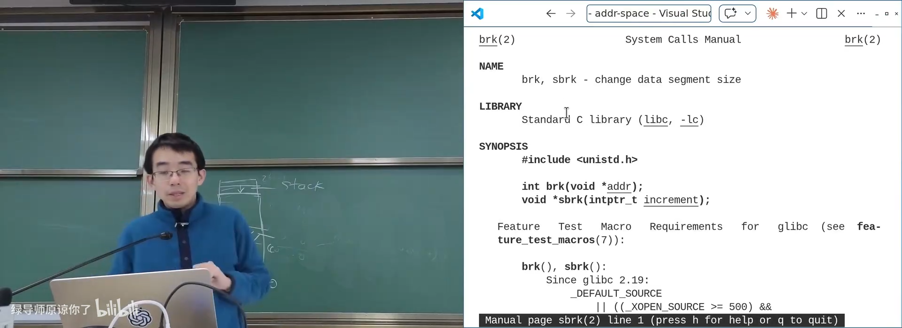
📷 通过调整 break 改变堆空间
回到原视频 (00:34:21)
5. mmap、munmap 与 mprotect
5.1 API
void *mmap(void *addr, size_t length, int prot, int flags,
int fd, off_t offset);
int munmap(void *addr, size_t length);
int mprotect(void *addr, size_t length, int prot);
addr：建议映射地址；length：映射长度；prot：读、写、执行权限；flags：匿名、私有、共享、固定地址等；fd：可选文件；offset：映射文件偏移。
flowchart LR
A["进程地址空间"] --> M["mmap"]
M --> AN["匿名零页 / 内存"]
M --> FM["文件映射"]
A --> U["munmap"]
A --> P["mprotect"]
P --> R["修改 rwx 权限"]
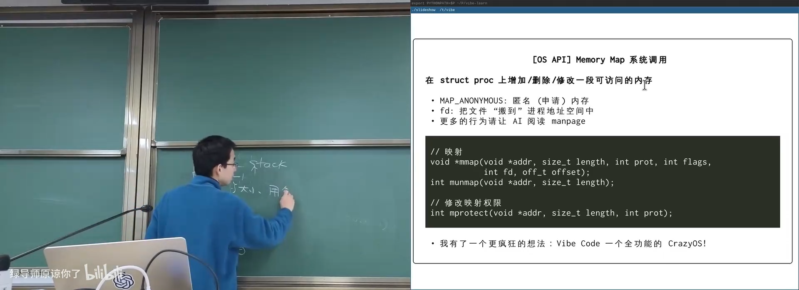
📷 mmap、munmap 与 mprotect 管理地址空间
回到原视频 (00:36:01)
5.2 匿名映射与按需分配
使用：
mmap(NULL, length,
PROT_READ | PROT_WRITE,
MAP_PRIVATE | MAP_ANONYMOUS,
-1, 0);
可以获得一段初始值为零的匿名内存。
关键点是：
mmap可以瞬间返回，即使申请 8 GB；- 此时不一定分配任何物理页；
- 只有第一次访问某个页面时，才触发缺页异常并分配物理页；
- 未访问的页面不会占用实际内存。
sequenceDiagram
participant P as 进程
participant O as 操作系统
participant M as 物理内存
P->>O: mmap(8GB)
O-->>P: 返回虚拟地址
P->>O: 首次访问某页
O->>M: 分配零页 / 物理页
O-->>P: 完成访问
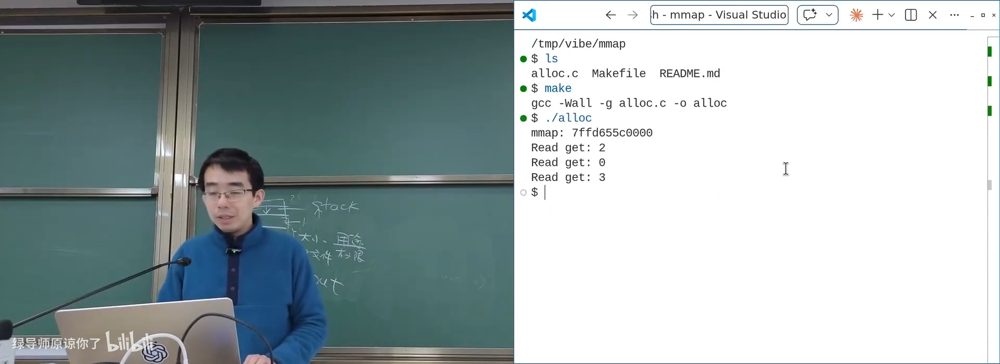
📷 申请超大匿名映射，实际访问时才分配物理页
回到原视频 (00:39:45)
strace 可以看到真实的 mmap 参数和返回地址。
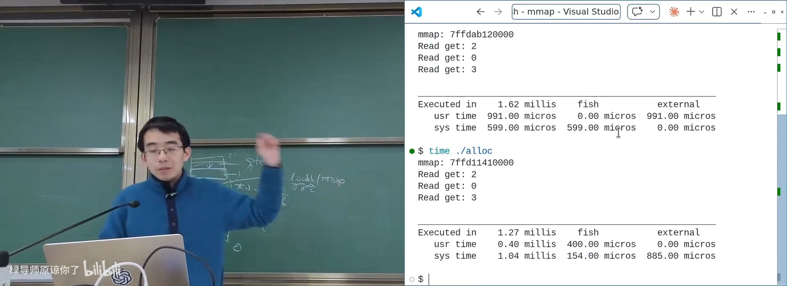
📷 strace 中的匿名 mmap 调用
回到原视频 (00:41:17)
5.3 文件映射
传入文件描述符后，mmap 可以把文件映射到地址空间：
flowchart LR
F["文件 / 设备"] --> O["open"]
O --> FD["文件描述符"]
FD --> M["mmap"]
M --> A["进程地址空间"]
A --> P["通过指针读写"]
典型用途：
- 映射大文件，只访问部分页面；
- 映射磁盘或设备；
- 映射
/dev/gpiomem控制 GPIO； - 在多个进程之间映射共享内存；
- 把设备寄存器当成内存访问。
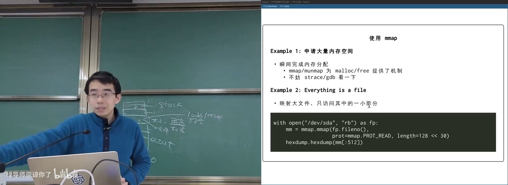
📷 将文件或设备直接映射到地址空间
回到原视频 (00:43:00)
危险也由此产生：错误地映射并写入整个磁盘设备，可能覆盖真实数据。课堂回忆了曾误覆盖讲台机磁盘的事故。
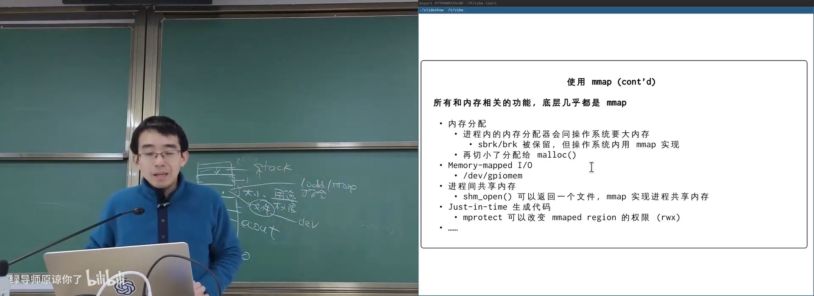
📷 通过 /dev/gpiomem 映射 GPIO 寄存器
回到原视频 (00:44:53)
5.4 共享内存
shm_open() 返回一个类似文件的描述符，多个进程可以分别 mmap：
flowchart TD
S["共享内存对象"] --> M1["mmap 进程 A"]
S --> M2["mmap 进程 B"]
M1 --> R["同一组物理页"]
M2 --> R
这为进程间通信和共享大块数据结构提供了高效机制。
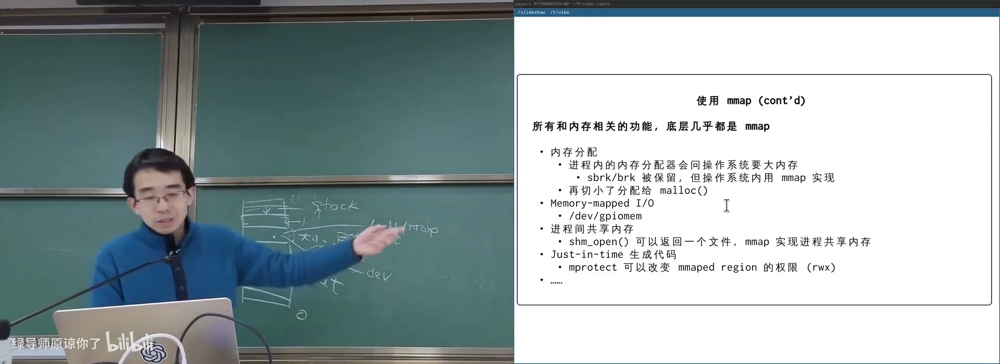
📷 共享内存对象可映射到多个进程
回到原视频 (00:45:20)
5.5 mprotect 与 JIT
动态生成代码时，可以先用可读可写权限写入机器码，再通过：
mprotect(addr, length, PROT_READ | PROT_EXEC);
把数据页变成可执行页。
flowchart LR
A["RW 内存"] --> W["写入机器码"]
W --> P["mprotect: R + X"]
P --> J["跳转到生成代码"]
浏览器 JavaScript 引擎、Java JIT 等都在运行时生成并执行代码。
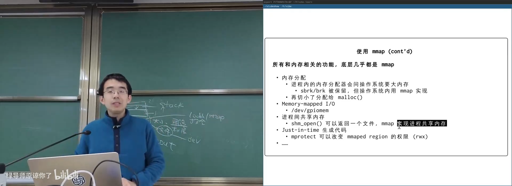
📷 mprotect 支持动态代码生成与 JIT
回到原视频 (00:45:44)
6. 入侵进程地址空间
6.1 GDB 如何插入断点
(参考时间: 00:48:33)
普通代码页通常是 r-x，不可写。GDB 要打断点，需要：
- 使用
ptrace附加目标进程； - 修改目标页权限；
- 把目标指令替换为断点指令；
- 命中后暂停目标进程；
- 恢复原指令；
- 再继续执行。
在 x86 上，单字节 int3 可作为软件断点：
int3
sequenceDiagram
participant G as GDB
participant P as 目标进程
participant O as 操作系统
G->>O: ptrace attach
G->>P: 修改页面权限
G->>P: 写入 int3
P->>O: 执行到 int3
O-->>G: 暂停并通知调试器
G->>P: 恢复原指令
因此，调试器本身就是“合法入侵另一个进程地址空间”的工具。
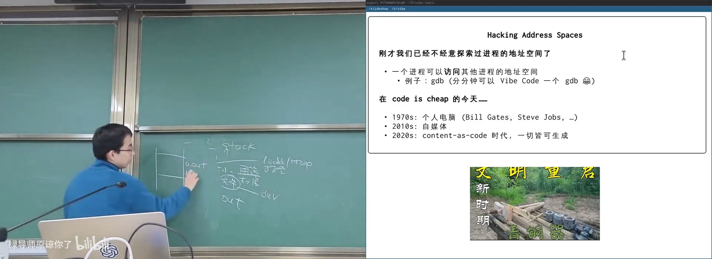
📷 GDB 通过 ptrace 和内存写入实现断点
回到原视频 (00:48:33)
6.2 Game Genie：总线上的物理金手指
(参考时间: 00:53:51)
在无 MMU 的卡带机时代，Game Genie 插在主机和游戏卡带之间，直接拦截地址总线与数据总线。
它维护一个 Lookup Table：
如果读取地址 A 且原值为 X
则把返回值替换为 Y
游戏初始化生命值为 3 时，只需匹配存放常数 3 的指令地址，就能改成 30、99 或任意值。
flowchart LR
C["CPU 地址 / 读信号"] --> G["Game Genie LUT"]
G -->|"命中 A:X"| Y["返回 Y"]
G -->|"未命中"| R["原始 ROM 数据"]
Y --> C
R --> C
Game Genie 本质上是一个极小的可编程固件，先展示自己的界面，配置 LUT，再把控制权交回游戏。
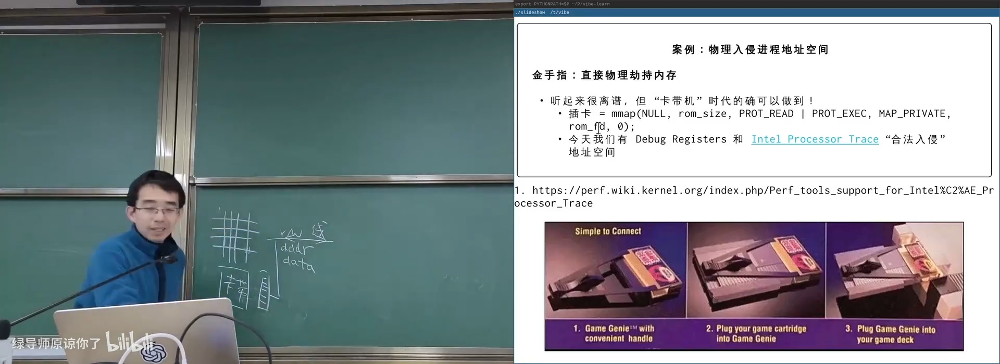
📷 Game Genie 用查表替换物理内存读取结果
回到原视频 (00:53:51)
6.3 内存扫描修改器
现代游戏外挂通常不需要改装总线，而是直接读写目标进程内存。
单地址变量
若游戏把金钱保存在一个固定地址：
进入游戏：EXP = 4950
击败怪物：EXP = 5100
可以：
- 扫描所有值为 4950 的内存；
- 打怪后再次扫描值变为 5100 的地址；
- 缩小候选集合；
- 找到真正的 EXP 地址并修改。
flowchart TD
S1["扫描 EXP=4950"] --> C1["大量候选"]
C1 --> E["战斗后 EXP=5100"]
E --> S2["二次扫描"]
S2 --> F["缩小候选"]
F --> M["修改目标地址"]
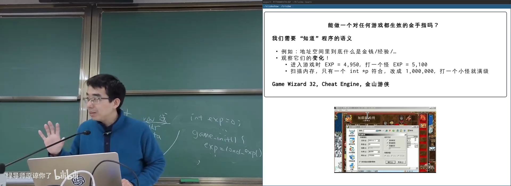
📷 内存扫描器通过数值变化定位游戏变量
回到原视频 (00:57:40)
课堂使用 DOSBox + 金山游侠风格工具演示修改即时战略游戏中的金钱。
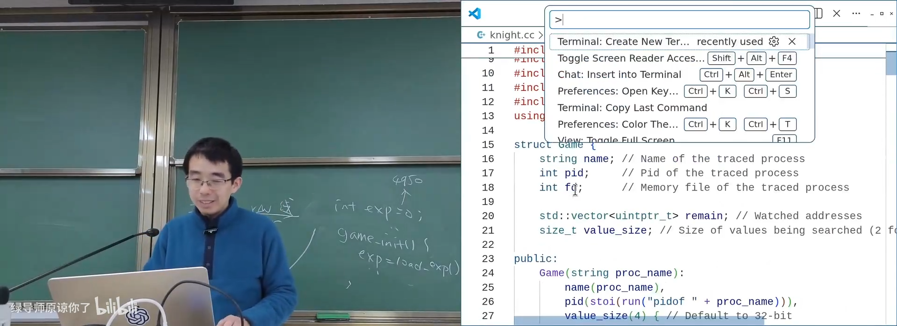
📷 修改目标进程内存改变游戏状态
回到原视频 (01:00:00)
数据不可变时扫描失效
如果游戏使用持久化数据结构：
state_new = new State(state);
state_new.update(exp);
state = state_new;
每次更新都会创建新对象，旧地址失效，简单扫描无法定位。
flowchart LR
S0["State v0<br/>EXP=4950"] --> S1["State v1<br/>EXP=5100"]
S1 --> S2["State v2<br/>EXP=5200"]
S0 -.旧地址失效.-> X["固定地址扫描失败"]
此时需要更深入理解程序语义，甚至编写专门的调试器脚本。
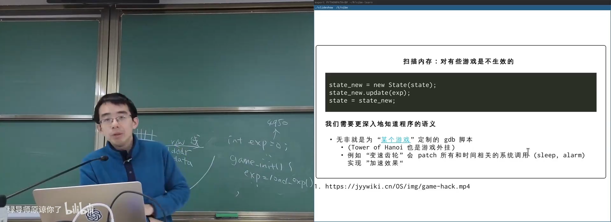
📷 不可变数据结构使固定地址扫描失效
回到原视频 (01:02:25)
6.4 变速齿轮
程序无法直接感知时间，只能通过系统调用，例如：
sleep();
usleep();
alarm();
gettimeofday();
变速工具可以：
- 拦截或替换时间相关函数；
- 把
sleep(t)变成sleep(t / speed)； - 对
gettimeofday()构造一个按比例加速的虚拟时间轴。
flowchart LR
A["游戏调用 sleep / gettimeofday"] --> H["时间劫持层"]
H --> V["虚拟时间轴"]
V --> R["游戏认为时间加速"]
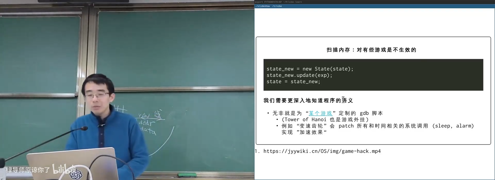
📷 变速齿轮通过劫持时间系统调用实现加速
回到原视频 (01:06:10)
6.5 更底层的 DMA 与 CXL
在更极端的场景中，外设可以通过 DMA 持续读取主内存，甚至把内存镜像到另一台计算机或 FPGA。
flowchart LR
CPU["CPU"] --> M["DRAM"]
M --> DMA["DMA / PCIe 设备"]
DMA --> F["FPGA / 另一台机器"]
F --> A["外部分析或修改内存"]
CXL 等高速内存互联还可以实现双写和内存镜像，用于数据中心容错，也可能被用于观测和修改进程状态。
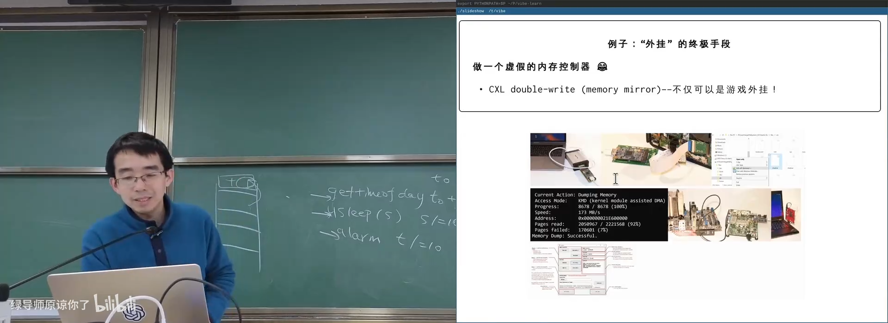
📷 通过 DMA 与 CXL 实现外部内存镜像
回到原视频 (01:12:23)
7. /proc/<pid>/mem
游戏修改器与地址空间探索工具最终都可以归结为文件操作：
int fd = open("/proc/<pid>/mem", O_RDWR);
lseek(fd, address, SEEK_SET);
read(fd, buffer, size);
write(fd, data, size);
/proc/<pid>/mem 看起来是一个普通文件，但它实际代表目标进程的完整地址空间。
flowchart LR
P["修改器进程"] --> F["/proc/PID/mem"]
F --> A["目标进程地址空间"]
A --> M["读取或修改数据"]
权限检查仍然存在：通常需要 ptrace 权限或 root 权限。
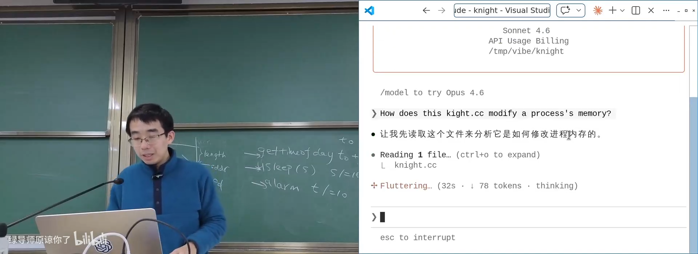
📷 通过 /proc/pid/mem 读写另一个进程的内存
回到原视频 (01:17:42)
8. 本讲总结
mindmap
root((进程地址空间))
字节来源
ISA 解释
ELF PT_LOAD
Loader + ABI
argv / envp / auxv
ASLR
指针与虚拟内存
地址与位宽
volatile
MMU 页表
权限检查
管理 API
brk / sbrk
mmap
匿名映射
文件映射
munmap
mprotect
应用
malloc
共享内存
MMIO
JIT
vvar / vdso
入侵
GDB / ptrace
Game Genie
内存扫描
变速齿轮
DMA / CXL
/proc/pid/mem
核心结论：
- 地址空间是进程可以通过指针访问的虚拟地址范围。
- 字节本身无类型，含义由 CPU 指令决定。
- ELF 的
PT_LOAD、加载器和 ABI 决定数据放在哪里。 - 初始栈中保存
argc、argv、envp、auxv。 - ASLR 随机化地址布局，提高攻击难度。
procfs的maps和mem可以观察甚至修改其他进程。- MMU 是操作系统强制施加的地址翻译与权限检查机制。
brk是旧式堆扩展 API；现代内存映射主要依赖mmap。mmap可按需分配匿名内存，也可映射文件、设备和共享内存。munmap回收映射，mprotect修改读、写、执行权限。- 动态代码生成依赖从读写页面切换到可执行页面。
- 调试器、游戏外挂和内存工具都建立在进程内存访问能力之上。
计算机世界里没有魔法。
每一个地址、每一个字节和每一项权限，最终都有明确的来源。
附：官方参考与延伸阅读
课程与讲义：
课程演示：
系统与硬件资料：
- System V ABI，重点阅读 Section 3.4 Process Initialization。
- Intel Processor Trace
- Game Genie Technical Notes
- Game Genie 专利 EP0402067A2
- Game Genie 工作原理
阅读材料：
- Operating Systems: Three Easy Pieces
- 第 12 章：Dialogue；
- 第 13 章：Address Spaces；
- 第 14 章：Memory API。
man 2 mmapman 2 munmapman 2 mprotectman 2 brkman 5 procman 2 ptrace
版权说明：课程讲义与幻灯片的著作权归蒋炎岩所有，采用 Creative Commons BY-NC 4.0 许可。电子书正文为课堂内容的书面化重构，脚本占位符已替换为视频画面或官方资料渲染图；引用与来源链接均保留在本页。